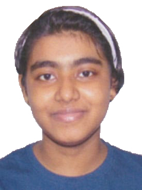

My Professional Portfolio

Home
Hi, I am Srijeeta Dutta, and welcome to my professional portfolio. Here you can find information about my background, experiences, and achievements.
About Me
I am flexible, reliable, and possess excellent time-keeping skills. I love combining logic and creative design to create eye-catching, accessible, and user-friendly websites and applications. I’m excited to continue refining my skills and am comfortable working both in a team environment and independently.
Educational Background
- Class 10 (WBBSE - English Medium) - 94% from Holy Child Institute
- Class 12 (WBCHSE - English Medium) - 83% from Holy Child Institute
- Currently pursuing a B.Tech Degree in CSE (AI & ML) from University of Engineering and Management, Kolkata
Experience
- Experience in HTML
- Knowledge of programming languages such as Python, C, C++
Paper/Patent Publications
My team and I are preparing a review article on "Effects of Illegal Websites on the Young Generation".
Awards and Achievements
- 2nd place in Vocal Music Competition at "Azadi Ka Amrit Mahotsav" held at the Ancestral House of Swami Vivekananda
- 5th place in the state-level quiz competition "Trimilan"
Research Thrust Area
My research interests as a B.Tech student in CSE (AI & ML) include:
- Artificial Intelligence and Machine Learning applications in web development, natural language processing, and computer vision
- Web Development and Cybersecurity: investigating secure coding practices and AI-powered security solutions
- Human-Computer Interaction: designing intuitive, user-centered interfaces
I am also interested in public speaking, singing, anchoring, hosting, and reading storybooks.
List of Events (Organized/Attended)
- Smart India Hackathon (2024)
- Smart Maker Festival (2024)
- Web and App Development Workshop
- Poster Making Competition
- Mela Minds (Quiz Competition)
- UEMK Toastmasters
- Symphony Club auditions, and more...
Poster/Paper Presentation
- Participated in a poster competition on "Application of Artificial Intelligence in Chemistry and Biotechnology".
- Class presentation on "Crime Thrillers".
Courses Completed (NPTEL/COURSERA/LinkedIn Learning)